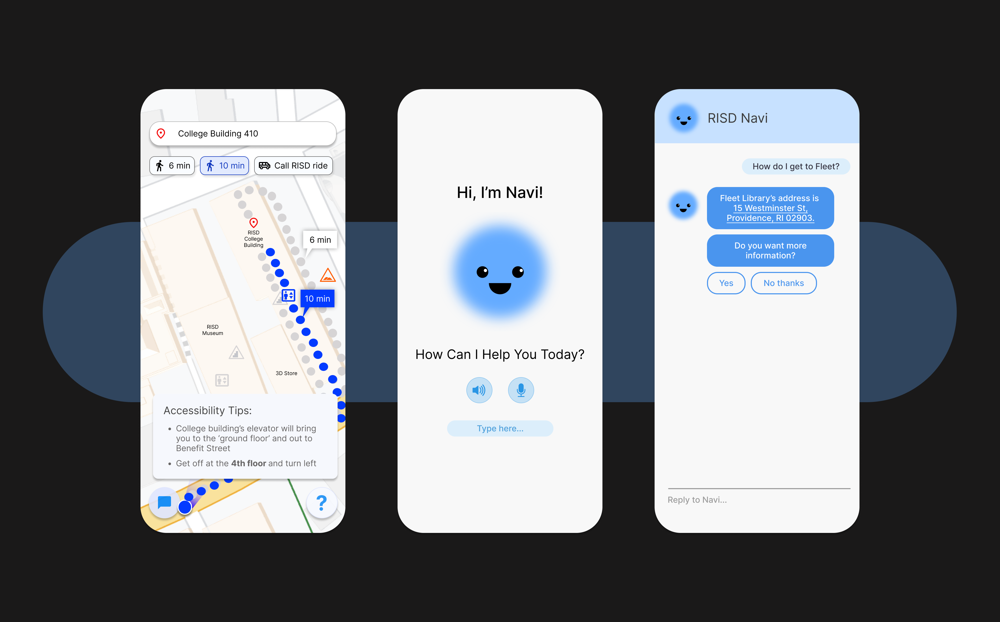
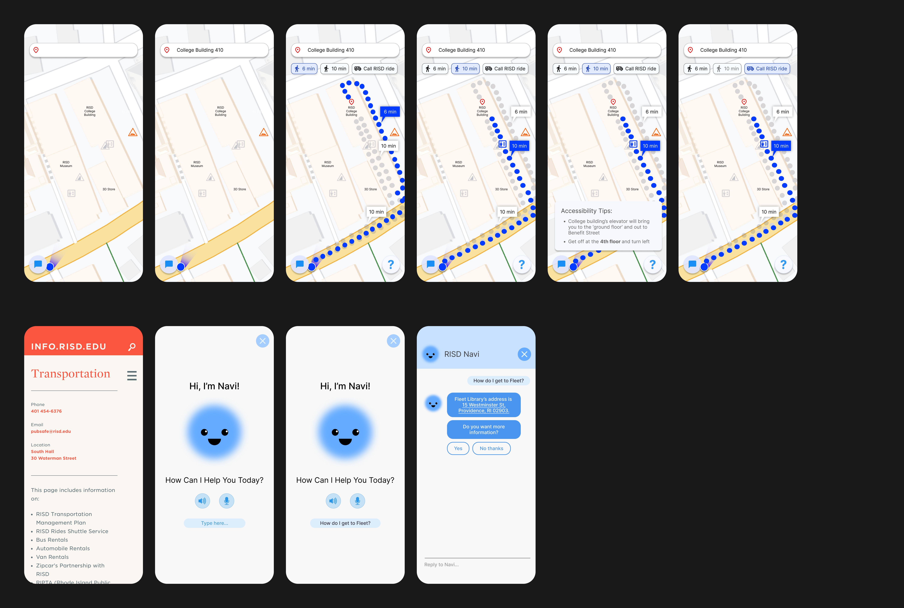
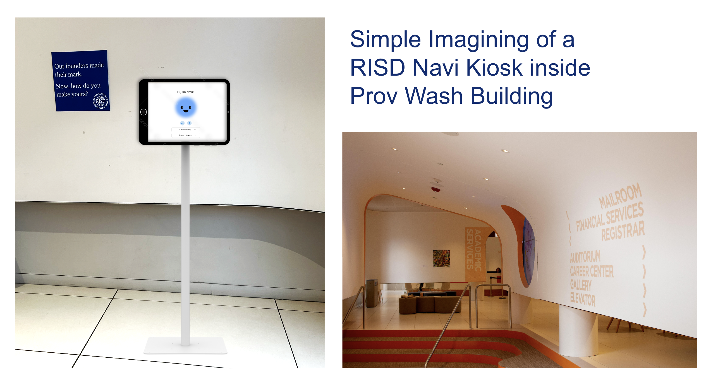
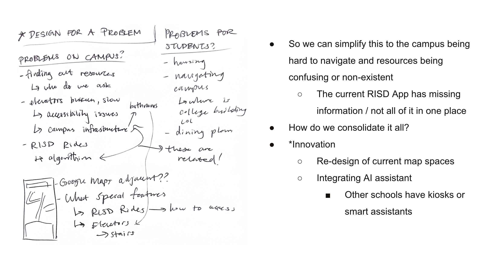

RISD Navi
An award-winning app that consolidates wayfinding and resources for the RISD community.
00. The Design-a-Thon Prompt
create a solution for RISD campus challenges
What are unique challenges students face on RISD campus?
What solutions already exist?
How can we create something that will help people navigate campus?
What features consolidate information from campus websites and apps?
01. Feature Overview
Key Features
Initial Features
Generates multiple paths with different accessibility levels
Easy resource for RISD Ride and other transport methods
These will both be labeled on the map
RISD Buildings are familiarly labeled
Accessibility Features
The app will calculate waiting time for elevators
Clicking on this button opens the RISD transport resource page, telling students how to call a ride
Clicking on the question mark button opens any pathway tips/notes the app might have
The map will prioritize more accessible routes, so favoring elevator routes over stairway ones
Navi Chatbot
Navi chatbot is trained on a living document whose information is sourced by official university websites and staff, faculty, and students
Navi chatbot will be available 24/7, able to answer questions at any time. It also gives answer prompts, in case students don't know what to ask
02. Pain Points & Inspiration
Problems & Solutions
Addressing User Challenges
There are three different websites that show up for one search of RISD 'DSS,' as well as a RISD app
Navi gives answers sourced from every possible RISD website and app, as well as the relevant link(s) to sources, including a live document of information submitted by students and staff
Many students are unaware of the elevator shortcut inside College Building, which could help them get up the hill
Navi app displays where the elevator and stairs are within buildings, and gives path calculations for both
Apple Maps doesn't recognize 'College Building' and places that may be locally called something else are hard to search
The app and Navi chatbot will label things by the names students and other people on staff know them as
What if a student didn't know to download the RISD Navi app?
Ideally, there would be iPad kiosks at highly-populated areas of campus with Navi installed
03. ChatGPT Simulation
Creating a Chatbot to Simulate RISD Navi
Navi Chatbot
This chatbot was trained on a PDF document with information sourced from official sites and my team's tips
Students might not know who to ask questions to, or they need to wait for answers via email. The chatbot is always available!
04. Wireframes & Process
Design Evolution
Final Wireframes

Initial Thoughts & Scribbles


05. Feedback & Lessons
User Feedback
"It's awesome how the map includes the feature where you can see stairs and elevator pathways. That really would help me figure out how to get to class, or when to leave for class."
— Classmate S"Your project was strong and stood out because of the inspiration and reasoning. This would be a great resource for everyone on campus, I wish it existed."
— Scott Noh | Make-a-Thon Judge & Industrial Design Professor"The way you created scenarios and pain points was super successful. It really helped put the product into context, and I think we'd all use it!"
— Classmate CWhat I Learned
This project reinforced the importance of user-centered design. I believe we placed in the top 3 for the Make-a-Thon because of how strong of an impact our product could have. I find myself wishing it existed every day! Also, I wouldn't have been able to do this without my lovely teammates and friends, Celine and Hyunmin. Shoutout to them for being great and keeping up fun energy. We munched the time crunch! 💌